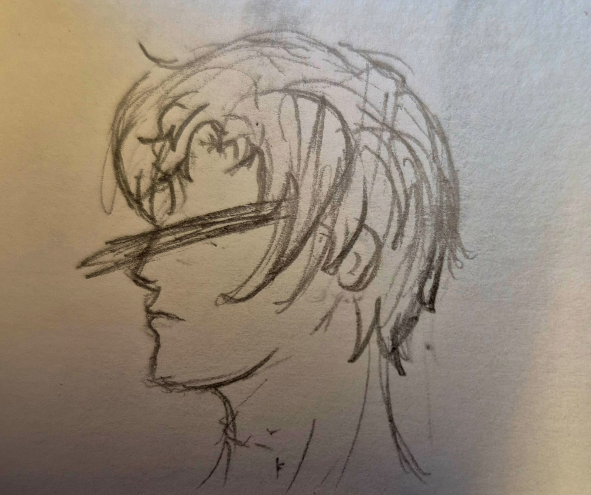

short entry
a little annoyed
2026
Freedom of expression is a wonderful term. It is a term we all believe in— atleast all of us do when what's being expressed is something we agree with. The real test of freedom of expression, of course, lies when what's being expressed doesn't benefit or please us.
The problem with using present morality as a guiding compass for what should be considered worthy to be banned and what shouldn't be is that human morality has historically been malleable as hell. Ductile. And often has been bent to suit its time and place.
We frown over incest and clap for gay relationships in media because that's the time we live in. There was a time it was opposite. There was a time when incest was A-OK but being gay was a freaking crime.
Do you see my point? Not yet?
Censorship of immoral or ammoral material is how extremist governments take over. Suddenly, it isn't just things we consider immoral, its things they will consider immoral. Things like free thinking and normal human behaviour. Its how totalitarian regimes take over. Common morality and its perception is ever changing.
Art needs to exist. Bad and 'immoral' art needs to exist. I am not saying we should promote it. I am not saying it shouldn't be criticised. But it should be allowed to exist. Its how humans explore the taboo without real harm.
"But atleast not the one which glorifies—"
NO. EVEN THEN. What you consider now glorification can become honest truth of some other generation. What you consider honest moral truth right now could become wrongful glorification of some other generation.
So. The question is, reader, can you still advocate for freedom of speech when the things being expressed make to wish you throw up? Make you angry and disgust you? Because that is where the test lies.
Margin note
this rant (?) was inspired from me getting rejected by a movie club for stating these opinions and being "too controversial".
